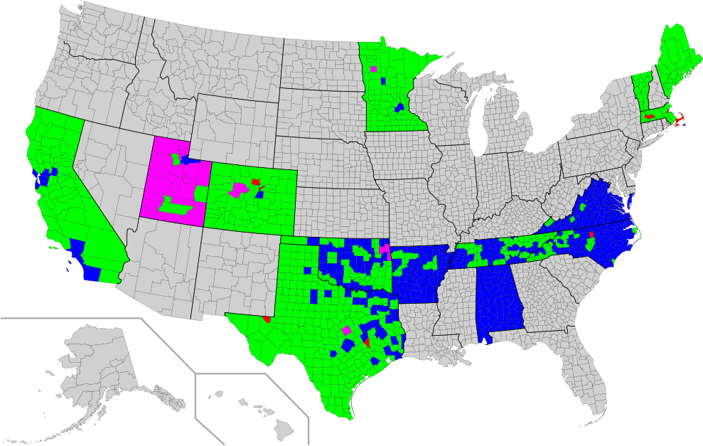
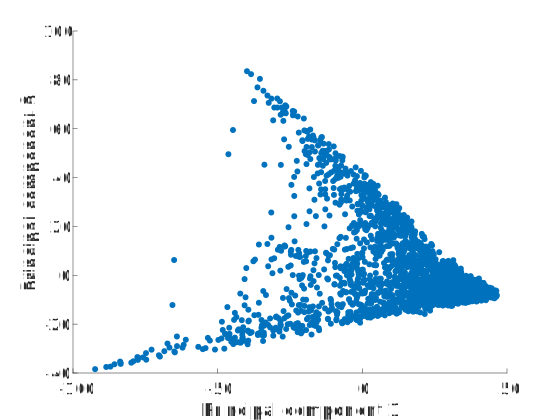
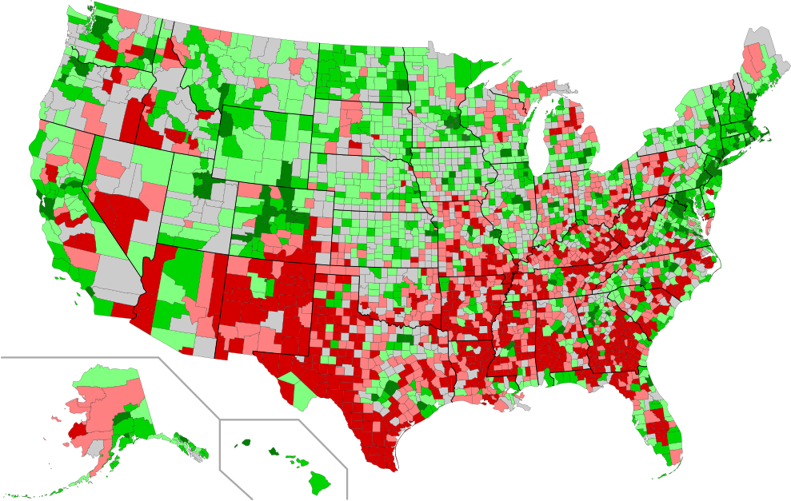
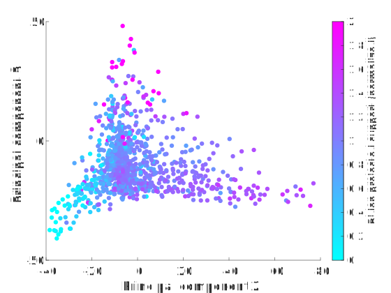
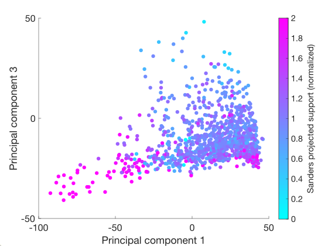
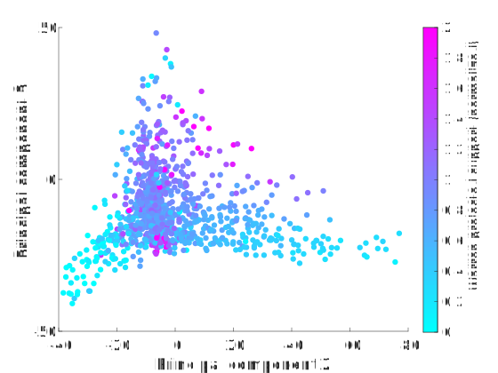

For the 2020 Democratic primaries, I have decided to predict results using a simple regression based on demographics. To accomplish this, I performed the following steps:
To test my model, I decided to predict the results in South Carolina using those from Iowa, New Hampshire and Nevada.
Prior to Super Tuesday, I made predictions and performed analysis on the model output. This included interpretations of patterns in candidate support as well as of my principal components.
Before I introduce my predictions, two important notes are necessary. Firstly, my model is only as good as its input. After performing regression to get candidate support as a function of demographics, normalized to a hypothetical baseline of support, I input the current polling numbers to get actual numerical predictions. Therefore, if the polls are off, so is my model. Secondly, both my predictions and my commentary are solely based on model output. I'm not attempting to put my thumb on the scale, and I'm definitely not attempting to inject personal views into any of this. I'm a mathematician, not a pundit. Having said that, I have included a county map of my predictions below:

A few general trends are notable. First of all, since Bloomberg did not campaign in any of the states prior to Super Tuesday, my model treats him as a blank slate in terms of demographic patterns of support. This means that he does best in areas that don't particularly fit in with the other major candidates' bases. On the map above, Bloomberg's county wins are in Mormon-heavy counties in rural Utah (where he is helped by a high polling average as of March 3), ski resorts in Colorado, Native American areas in Oklahoma and Minnesota, and a county in Texas (Coryell) that contains a large military population. All of these have their own statistical signatures in their demographics that for whatever reason don't match with high levels of support for Sanders, Biden or Warren.
Biden's predicted support according to my model comes from two chief sources: rich suburbs and black voters. It's easiest to see this on a graph of predicted support for Biden in Super Tuesday counties as a function of some of the principal components of my model. When the first two principal components that I base my model on are plotted against each other for all 3142 counties in the United States, the result is a rather tidy-looking triangle:

The vertices of this triangle are Garfield County, Montana (high PC1), Jefferson County, Mississippi (low PC1, high PC2), and Starr County, Texas (low PC1, low PC2). In some ways, these represent the Platonic ideals of rural counties in the Midwest/northern Great Plains, Southeast, and Southwest, respectively. Distance from the second of these vertices is an effective proxy for percent black population in a county.
Socioeconomic status is often a nebulous concept, typically based around income and education, and as a result it is hard to quantify. However, my third principal component seems to correlate very well with it. This can be attested to by a map of PC3 on a county level (below). Here, counties are shaded according to which quintile for PC3 they belong to (with red being low and green being high); additionally, the top 5% of counties are highlighted by being in a darker green than the rest of the top quintile. The highest counties are rich and well-educated, while the lowest are poor and mostly rural:

Plotting Biden's results as a function of PC2 and PC3 demonstrates his two main bases. His support is correlated with both PC2 and PC3:

Sanders, on the other hand, has very strong support in the area of the PC1-PC2 triangle closest to the low PC1/low PC2 vertex. Anecdotally, the counties in this area have high Hispanic populations. Support for Sanders also appears negatively correlated with PC3, which can be seen in this graph which plots PC1 against PC3:

The few counties that Warren wins in the model are upscale and often contain college towns. Additionally, the model has her best counties that she doesn't win as mostly rich suburbs. For instance, in Minnesota, her best counties are the suburban ones in the Twin Cities metro area (e.g. Dakota, Scott, Washington). Warren also does well in areas with more white voters. The correlation coefficient between predicted support for Warren in Super Tuesday counties and PC1 is 0.53, while that between Warren's predicted support and PC3 is 0.42; these are the two strongest correlations between support for any candidate and any of my first six principal components. Plotting Warren's support as a function of PC2 and PC3 demonstrates this, as well as the differences between her support and Biden's:
